Las personas detrás de la neurología
Anatomistas, clínicos, fisiólogos y pacientes que construyeron la neurología, de Galeno y Vesalio a Cajal, Charcot, Levi-Montalcini y Brenda Milner.
 c. 129–c. 216
c. 129–c. 216Galeno
El médico griego de Pérgamo que demostró con experimentos que el cerebro, y no el corazón, controla la voz y el movimiento. Su autoridad duró 1.400 años.
Leer → 1514–1564
1514–1564Andreas Vesalio
El anatomista flamenco que se atrevió a corregir a Galeno disecando cadáveres humanos. Su «Fabrica» (1543) incluye algunas de las primeras imágenes precisas del cerebro.
Leer → 1621–1675
1621–1675Thomas Willis
El médico de Oxford que acuñó la palabra «neurología», describió el anillo arterial de la base del cerebro y situó las funciones mentales en la sustancia del cerebro y no en los ventrículos.
Leer →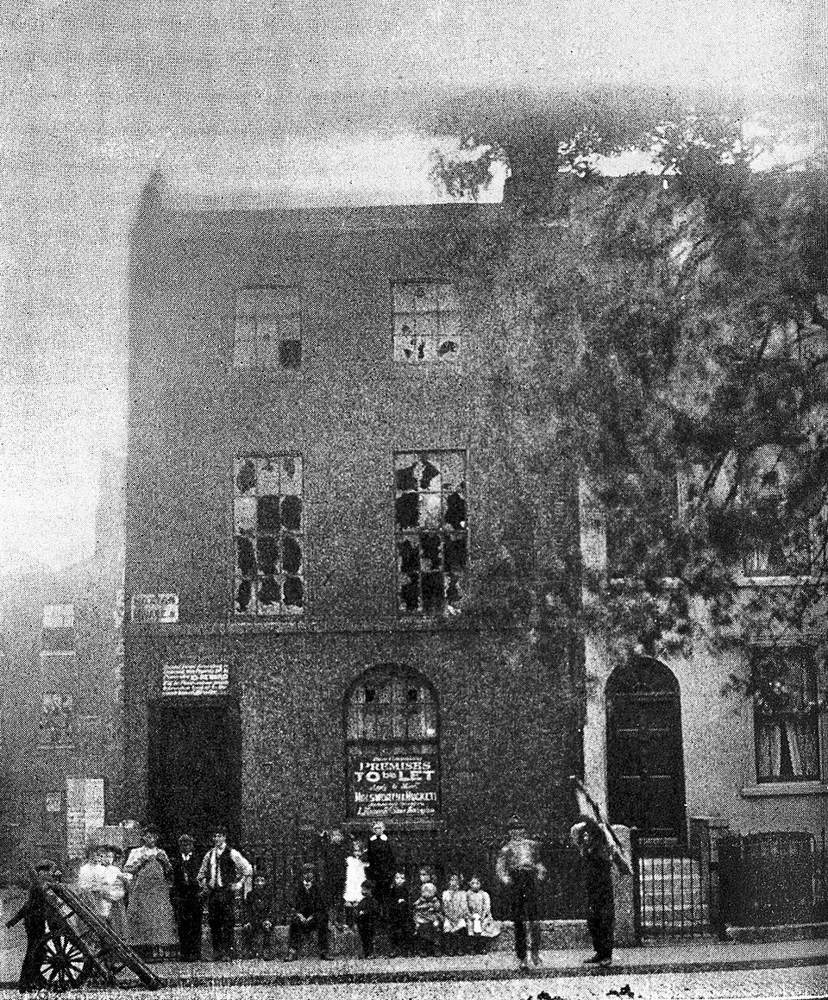
1755–1824James Parkinson
Un médico de barrio de Londres, también geólogo y activista político, que en 1817 describió con precisión la «parálisis agitante» a partir de seis personas, algunas observadas por la calle.
Leer →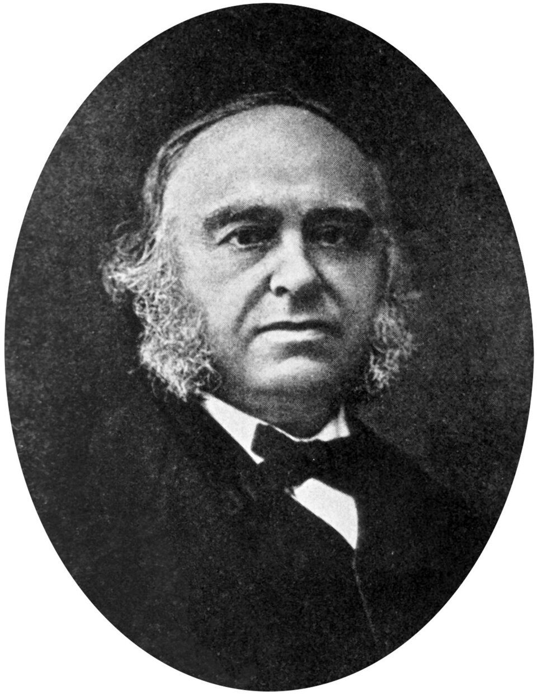
1824–1880Paul Broca
Cirujano y antropólogo francés que en 1861 localizó en el lóbulo frontal izquierdo un área necesaria para hablar. Fue la primera prueba sólida de que las funciones mentales tienen una sede concreta en el cerebro.
Leer → 1823–1860
1823–1860Phineas Gage
Un capataz de ferrocarril al que una barra de hierro atravesó el cráneo en 1848. Sobrevivió, pero «ya no era Gage». Su caso es el paciente más famoso de la historia de la neurología.
Leer →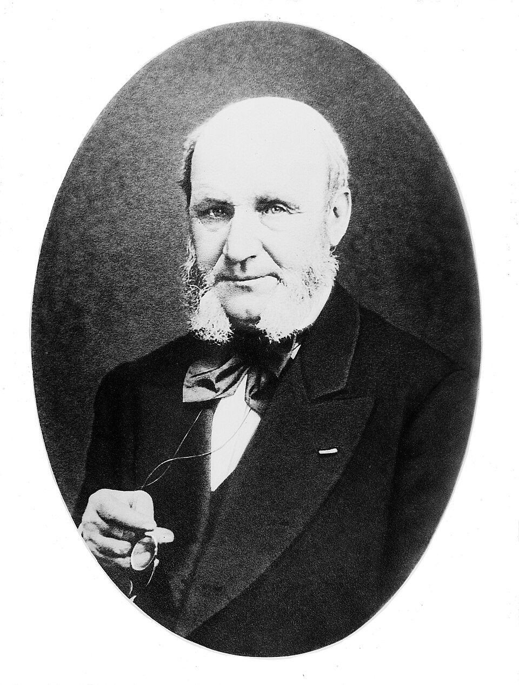
1806–1875Guillaume Duchenne
Un médico sin plaza en ningún hospital que recorría las salas de París con su aparato eléctrico. Pionero de la electrofisiología muscular, la fotografía médica y la descripción de la distrofia muscular.
Leer → 1825–1893
1825–1893Jean-Martin Charcot
El «Napoleón de las neurosis» convirtió el hospital de la Salpêtrière de París en la cuna de la neurología moderna. Describió la esclerosis múltiple, la ELA y la artropatía que lleva su nombre.
Leer →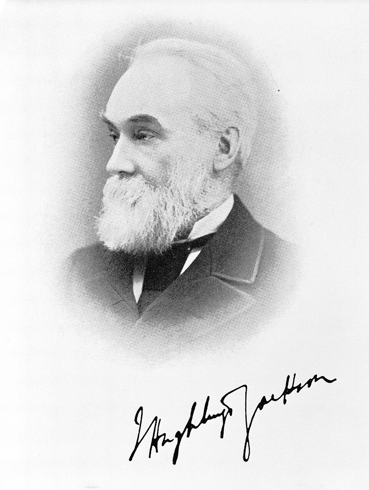
1835–1911John Hughlings Jackson
El «padre de la neurología británica» entendió la epilepsia como una descarga de las neuronas y dedujo, solo observando cómo se extendían las crisis, que la corteza cerebral tiene un mapa del cuerpo.
Leer →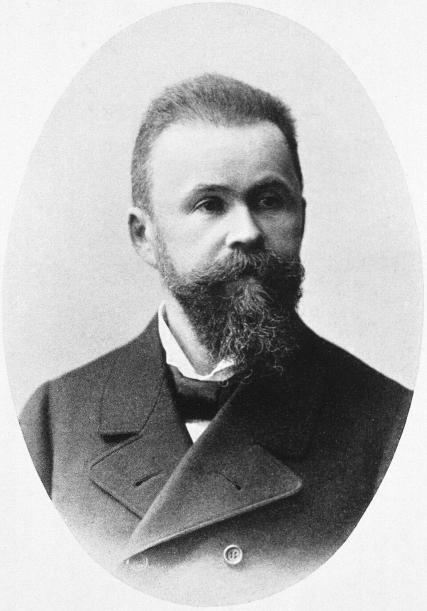
1848–1905Carl Wernicke
Con solo 26 años describió un área del lóbulo temporal necesaria para comprender el lenguaje y propuso un modelo de conexiones entre áreas que todavía se enseña.
Leer → 1843–1926
1843–1926Camillo Golgi
Inventó en la cocina de un hospital la «reacción negra», que por fin dejó ver neuronas completas. Compartió el Nobel con Cajal, aunque defendía la teoría contraria.
Leer → 1852–1934
1852–1934Santiago Ramón y Cajal
El científico español más influyente de la historia. Demostró que el sistema nervioso está formado por neuronas independientes, intuyó cómo viaja el impulso y dejó miles de dibujos que todavía se usan. Nobel en 1906.
Leer → 1857–1932
1857–1932Joseph Babinski
Discípulo de Charcot de origen polaco que en 1896 describió el reflejo del dedo gordo que todavía usan todos los médicos para detectar una lesión del cerebro o la médula.
Leer →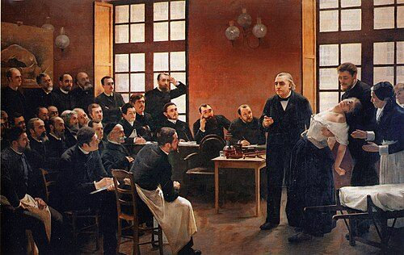
1857–1904Georges Gilles de la Tourette
Discípulo de Charcot que en 1885 describió el síndrome de tics que lleva su nombre. Su vida, con un atentado incluido, parece de novela.
Leer → 1857–1952
1857–1952Charles Sherrington
El fisiólogo británico que acuñó la palabra «sinapsis» y explicó cómo el sistema nervioso integra la excitación y la inhibición para producir movimientos coordinados. Nobel en 1932.
Leer → 1864–1915
1864–1915Alois Alzheimer
Psiquiatra y neuropatólogo alemán que en 1906 describió en una paciente de 51 años las placas y ovillos de la enfermedad que lleva su nombre.
Leer →1850–1906Auguste Deter
La primera paciente diagnosticada de enfermedad de Alzheimer. Su historia clínica, perdida durante casi un siglo, se encontró en 1995 en Fráncfort.
Leer → 1882–1945
1882–1945Pío del Río Hortega
Discípulo de Cajal, descubrió la microglía y caracterizó los oligodendrocitos con un método de tinción propio. Dos veces propuesto para el Nobel, murió en el exilio en Buenos Aires.
Leer →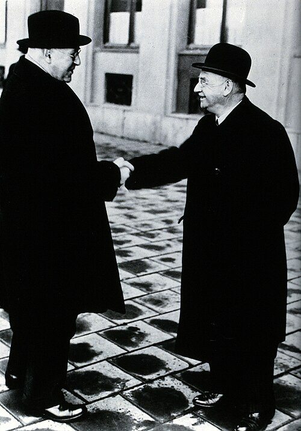
1873–1961Otto Loewi
Un sueño le dio la idea del experimento que demostró que las neuronas se comunican mediante sustancias químicas. Nobel en 1936, tuvo que entregar el dinero del premio a los nazis para salir de Austria.
Leer → 1869–1939
1869–1939Harvey Cushing
El padre de la neurocirugía moderna. Redujo la mortalidad de las operaciones cerebrales de más del 30 % a menos del 10 %, operó más de 2.000 tumores y describió la enfermedad que lleva su nombre.
Leer → 1873–1941
1873–1941Hans Berger
Un psiquiatra alemán que buscaba la base física de la telepatía y acabó registrando, en 1924, el primer electroencefalograma humano. Descubrió el ritmo alfa.
Leer → 1891–1976
1891–1976Wilder Penfield
El neurocirujano que estimuló el cerebro de pacientes despiertos durante la cirugía de la epilepsia y dibujó el famoso homúnculo. Fundó el Instituto Neurológico de Montreal.
Leer →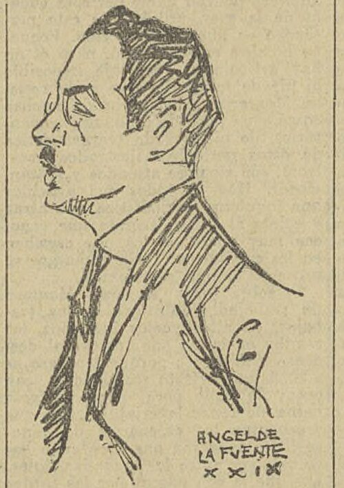
1902–1990Rafael Lorente de Nó
El discípulo más joven de Cajal describió la organización en columnas y circuitos de la corteza cerebral y del hipocampo, y fue un pionero de la fisiología de los circuitos neuronales.
Leer → 1902–1977
1902–1977Alexander Luria
Neuropsicólogo soviético que estudió a miles de soldados con heridas cerebrales y fundó la neuropsicología moderna. Escribió dos historias clínicas que inspiraron a Oliver Sacks.
Leer →1914–1998 y 1917–2012Alan Hodgkin y Andrew Huxley
Dos fisiólogos británicos que, con el axón gigante del calamar y una calculadora mecánica, explicaron cómo se genera el impulso nervioso. Su modelo matemático sigue vigente.
Leer → 1909–2012
1909–2012Rita Levi-Montalcini
Investigó en un laboratorio improvisado en su dormitorio durante la persecución fascista y descubrió el factor de crecimiento nervioso. Nobel en 1986, trabajó hasta los 103 años.
Leer →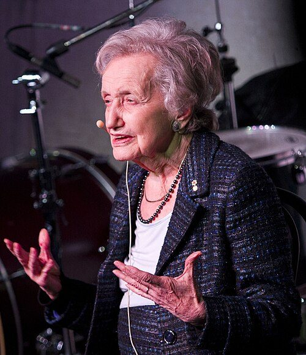
Nacida en 1918Brenda Milner
La neuropsicóloga que, estudiando al paciente H. M., demostró que el hipocampo es imprescindible para formar recuerdos y que existen distintos sistemas de memoria. Siguió trabajando pasados los cien años.
Leer → 1929–
1929–Eric Kandel
Huyó de Viena de niño en 1939 y décadas después descubrió, en una babosa marina, los cambios moleculares de las sinapsis que permiten aprender y recordar. Nobel en 2000.
Leer →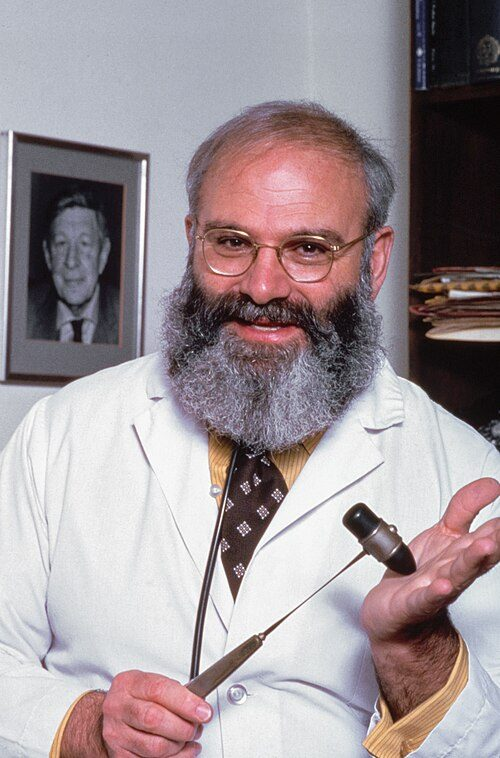
1933–2015Oliver Sacks
El neurólogo escritor que contó las historias de sus pacientes con curiosidad y humanidad. «El hombre que confundió a su mujer con un sombrero» y «Despertares» acercaron la neurología a millones de lectores.
Leer →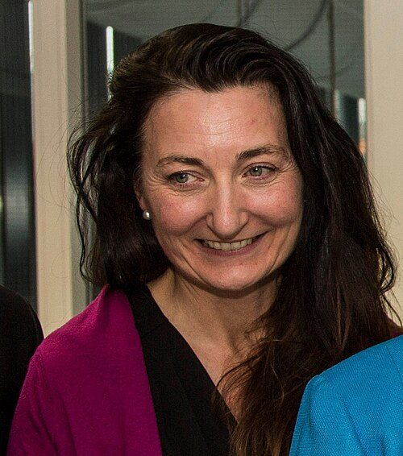
1963– y 1962–May-Britt y Edvard Moser
Un matrimonio de neurocientíficos noruegos que descubrió las «células de rejilla», el sistema de coordenadas del GPS del cerebro. Nobel en 2014 junto a John O'Keefe.
Leer →